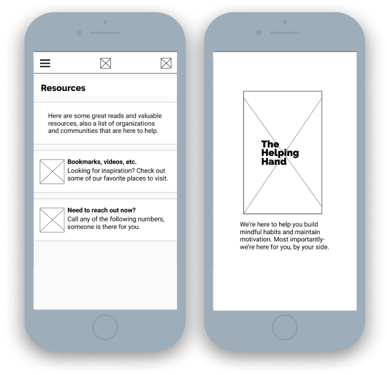
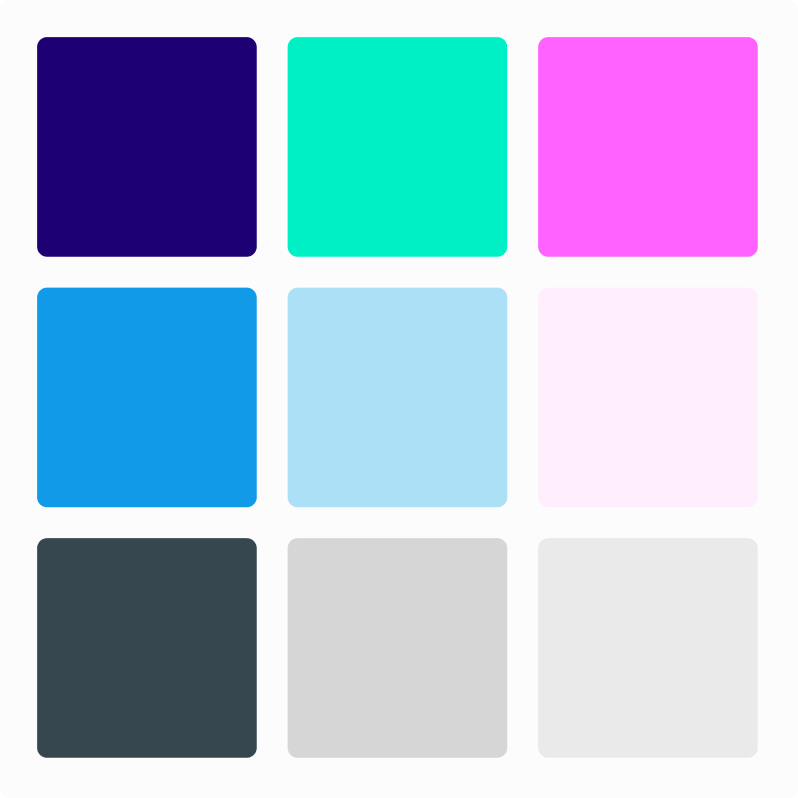
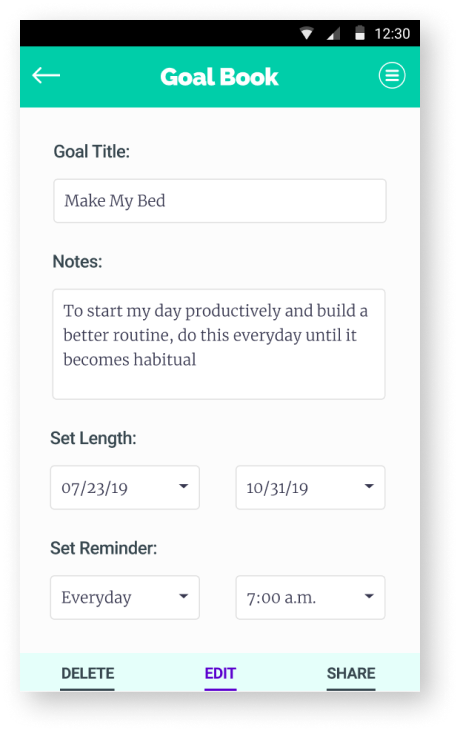
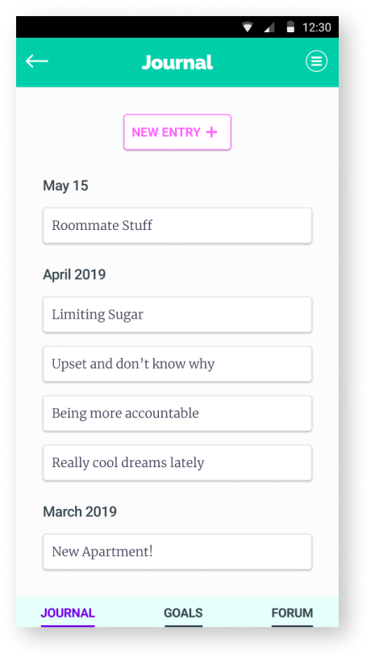
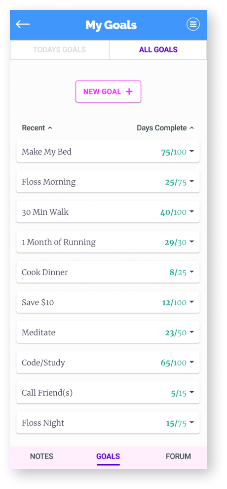

Set goals. Write notes.
Share and discover resources to begin a
more thoughtful and healthy state of mind.
Duration
·2 months
Tools
·Figma
·InVision
·Maze
·Whimsical
Deliverables
·User Surveys
·User Stories + Personas
·User Flows + Sitemap
·Competitive Analysis
·Branding + Style Guide
·Visual Design
·Wireframing
·Lo + Hi Fi Mockups
·Prototype + User Testing
Roles
·UX Research + Design
·Branding Identity
·Visual Design
Problem:
·Provide a resource that promotes daily mindful activities, to encourage a Growth Mindset.
·How to share techniques that help deal with anxiety and bad habits.
·How to gain trust and market this app while designing ethically; present not as a substitute to therapy, but as a friend to confide in.
Solution:
·Design an application with the ability to set Goals and write in a Journal.
·Promote accountability and sharing with a Forum and Goal-sharing features.
·Help motivate by using positive language, bright color schemes, successful status bars and local resources.
RESEARCH&DISCOVERY
User Surveys
90% of Users currently set goals on a regular basis.
Goal Book will be an app for those already setting goals and New users alike.
65% ended a habit by setting a specific goal duration/end-date.
People already use this technique, while a large amount of others
could benefit from setting time-based goals.
50% want to begin writing about their goal progress + setbacks.
Showing a need for either a Note-taking or Journaling feature.
80% inform a friend or family member about their desired goal.
20% have nobody to contact when feeling defeated. Designing inclusively, this need is important to address.
55% only resource is browsing the internet; can benefit from an organized and compiled list
(blogs, videos, scientific papers, practitioners, hotlines, etc).
These responses show user-interest for goals and journaling;
a SWOT Analysis was then conducted to research how other habit-tracking apps present similar features.
Competitive Analysis
Loop Habit Tracker
Very minimal and easy to navigate
Lack of bloat allows to quickly set goals
Habit Hub
Extensive amount of features + customization.
Feels trusted and professional; very attractive and contemporary visual design.
Many features causing bloat and confusion when navigating.
Habit Bull
Discussion forum is great, and not found in other apps.
Past Data & Streaks are presented well.
Aesthetic feels unprofessional and dated.
Looking at these differences in addition to survey responses gave insight to a strong MVP and other features:
Hierarchy: Emphasize Goals and Journal as main features; design these to be quickly accessible and customizable. Light/Attractive UI: Brand Identity to feel trusted and professional. Minimal: Avoid bloat to navigate simply; to feel easy-going and open. Positive re-inforcement: Rewarding language, fun illustrations, local resources. Extra features: Forum, Device- Syncing, Goal-Data + previous success rates.
User Personas
Matthew / 21 / Advanced
Wants to set time-based goals and be reminded to perform tasks.
Wants to quit cigarettes and track his progress.
Wants to share his goals with friends and family.
Angela / 32 / Advanced
Tired of ‘exclusive’ applications and only supports ethical designs.
Needs to write and compile notes in an organized but simple format.
Deletes applications if they’re too bloated or un-attractive.
Jacq / 41 / Beginner
Wants to end bad-habits but needs to feel supported while doing it.
Wants a community they can relate and talk to anonymously.
New technolgy is difficult to learn- benefits greatly from a simple and thoughtful UX.
Personas give a real-life base for my User Stories. Compiling all this previous research-
writing User Stories gave more insight to the hierarchy and MVP:
Time-based goals: Set goals, reminder system. Feel supported: Share with family or have a place to reach out, ie: forum, resources. Emphasize Notes and Goals: High priority, not feel surrounded by bloat or hard to find. Emphasize inclusivity: Bad-habits and starting new goals is a difficult topic, inviting colors and positive/successful language.
User Stories
Finding the MVP for New and Returning Users alike. User Stories helped define the structure for the applcation.
USER
As a New User
As a Returning User
As a Returning User
As a Returning User
As a Returning User
As a Returning User
TASK
I want to create an account
I want to set goals in a timer/reminder format
I want to set goal-specifications
I want a journal to write about my goals and thoughts
I want a suggested list of mindful habits
I want to share my goals with friends or family
PRIORITY
High
High
High
High
Medium
Medium
INFORMATIONARCHITECTURE
User Flows
A focus on being simple and direct, created
user flows for the most important features. User Flows helped set the basis for
the information architecture.
Wireframes & Content Strategy
Started with Lo-Fi Wireframes for my User Flows
and quick informal testing to see how users want to interact with the app.
Testing Wireframes:
Current Goals / New Goals screen are confusing on where interaction should be (too busy, no emphasis).
Dropdown menu purpose is unclear.
Current Goals list is very large, what happens when there are 5, 10+ goals?
Writing the content based off real life experience gave a way to
present this as helpful to people trying to end-habits and reach new goals.

Content Strategy:
Friendly and Inclusive
Gain user’s trust by being transparent and using affirming language.
To feels honest and positive-
Speak as a friend, rather than relying on therapy or mental-health collaborators.
VISUALDESIGN
Brand Identity
Working simultaneously with Mockups- I focused the identity to be friendly, trusted,
and inviting- the Branding went through many iterations, to find my Brands ‘voice’.
Logo & Name:
To be light-hearted but professional, many names and logos explored:
“Goal Guide”, “Goal(ed) Mine”, “Light Space”, “Mind Well” and “Helping Hand”.
Exploring “The Helping Hand” with more detailed logos and mockup iterarations-
the purpose/task performed was unclear and confusing.
Back to sketching: I designed many logos for all of these names and nothing felt right.
Step away from puns and plays-on-words.
Goal Book shows a clear purpose and experience: Goals, Write, Read, Edit.
G-Arrow:
Minimal, Bubbled, Sturdy. Arrow representing the ability to move forward.
Success-Pen:
Scalable, Simple, Fun.
Flag represents success, Pen symbolizing writing, editing, and general book functions.
Color:
Working simultaneously with Lo-Fi Mockups, I experimented and
peer-reviewed multiple color options, balancing playful yet professional.

Many iterations later, the "final" palette helped compose the feeling, and purpose of Goal Book:
Inviting: Bright, Positive, Fun, Healthy. Blue/Green: Common in Business, Health and Wellness. Springtime: New beginnings, Change, Clean, Light, Space.
Typography:
Unique, Playful, Sturdy:
Raleway
Professional, Typewriter:
Merriweather
Familiar, Recognizable:
Roboto
Calls to Action:
Primary: Minimal, Bright, Recognizable
Navigation: Minimal, High Contrast, Bold
Mockups
Designing mockups alongside the Branding, many reiterations ensued. For brevity, only main screens are presented.
Beginning with Material Design, as it is trusted, efficient, and accessible.
Accessibility Concerns: Test color contrasts, yellow in particular.
Material Design: Changed Cards, margins, typography and
call to actions' to follow Material Design 2 guidelines.
Landing Page: All around is too busy and confusing. Removed background image.
Brand Focus: Emphasize better, reiterate Logo and Colors.
Personal Branding: Pen Logo ‘complete’. Dialing in on a solid focus, emphasize Brand voice with colors that are inviting, bright, and open
Personal Brand: Leaving Material Design. Begin Personal Web-App with a strong Brand focus.
Goals List: Being a main feature and storing a lot of content- focused on getting the Goals list just right.
Menu: Moved hamburger, added Navigation bar.
Goal Data: Reiterate title, checkmark, and margins.

Nav-bar: Focus confusing, added Todays and All Goals to top-Nav. Moved Main-Nav to bottom.
Call To Action: New, Branded.

Goal Data: Design solid, but moved to be a dropdown. Changed Edit placement and size.
Accessibility: Main BG to off-white. Success bar outline removed.
Mockups for the majority pages ready to move forward, I finished the remaining pages for a testable prototype.
GOALBOOK
Mockups & Testing
Filling out the prototype with a Splash, a Desktop Landing and other remaining screens-
Prototype Testing focused on the most used features: 1:Sign In, 2:Create Goal, & 3:Mark Goal Complete
Misclicks: Difficulty finding Sign-In and Drop-down buttons
Misclicks: Difficulty finding “Todays Goals” tab
Misclicks: Difference in Todays Goals & All Goals purpose is unclear
Accessibility: Difficulty finding buttons, contrast/colors need reiteration
Confirmations: Many users tried using inactive parts of the app, through some minor mis-direction,
all users successfully completed all tests.

Color Accessibility: Changed CTAs and Typography to follow guidelines
Sign In Process: Increase button size, differ from “Create New”
Bottom and Top Nav: Increase contrast and outline (top)
More: Removed bright greens on white backgrounds. Anchor header/footer
More intensive critique from a Senior Designer guided the ‘final’ iteration, tightenting up the usability.
Added On-boarding Screen: 3-screen-slides to grab attention early on - making a powerful
first impression. As trust and transparency are key, the on-boarding was meant to give the
user a sense of light-heartedness and professionalism.
Goal Confirmation: Moved check-mark to the left of the title. Feels more like a list
and more natural to read.
Menu: Removed Hamburger, moving secondary features to the Bottom-Nav. This helped emphasize the main
features, also making it more efficient and concise.
Test early and test often. Any amount of testing or critique creates a chance to shift perspective
and analyze my design from another view. Sharing my designs is intimidating, and once they are open to the public -
a new level of pressure and responsibility is created. To make a better experience for the User, we begin to see them not just as tests or clients - they are our most important collaborators; I am not
designing for them, I am designing with them. Goal Book exemplifies the methods that I’ve used to complete new goals
and to build a growth mindset. Through this project, I was able to promote a mindset and techniques that are positively beneficial, using my skills
as a Designer to reach-out and help other people around the world.